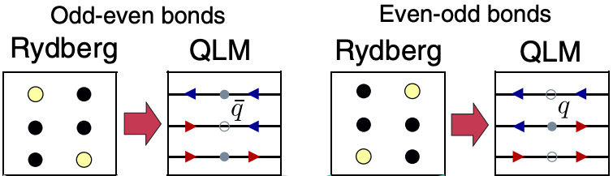
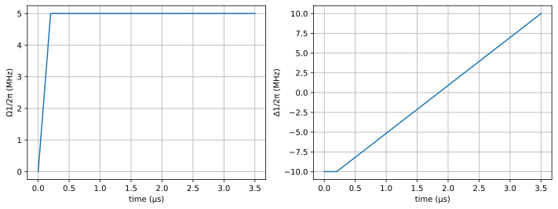
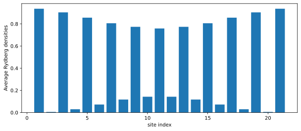
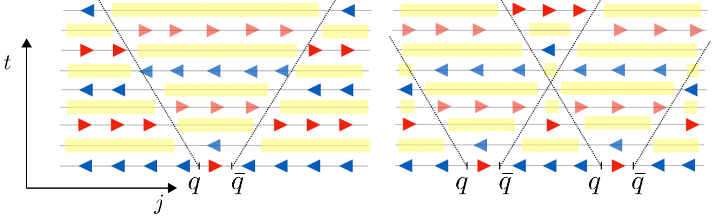
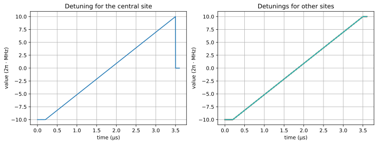
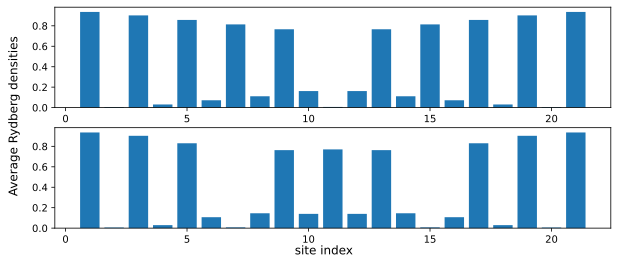
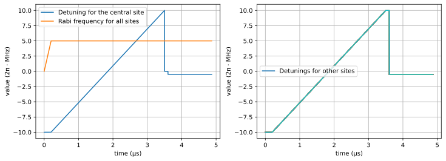
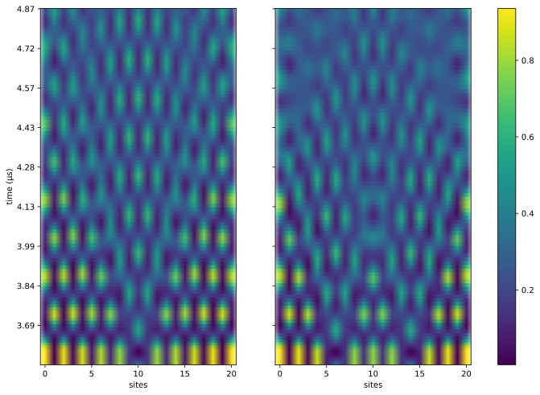

Simulation of lattice gauge theory with Rydberg atoms
Introduction
In previous examples, we have shown how to prepare $Z_2$ ordered ground state for the Rydberg system, and discussed the quantum scar phenomenon, which is the oscillation between two ordered patterns of Rydberg densities. We note that these are achieved by tuning the detuning and the Rabi frequency of the lasers that address all the atoms simulatenously.
In this tutorial, we shall simulate the dynamics of lattice gauge theory (LGT) with a 1D Rydberg atom chain. In the context of gauge theory, it turns out that the $Z_2$ ground state and the quantum scar of the Rydberg chain correspond to the "string" state and the string-inversion mechanism of the studied LGT respectively. More interestingly, by locally addressing certain atoms, we can create defects in the chain and simulate the propagation of particle-antiparticle pairs. This tutorial is inspired by the paper: Federica M. Surace, et al..
We first import the required packages
using Bloqade
using PythonCall
plt = pyimport("matplotlib.pyplot");Mapping between the Rydberg system and the LGT
In this tutorial, we are interested in the so-called quantum link model (QLM) formulation of the LGT. In this formalism, depending on the configurations of the even and odd sites, the bonds between them could be interpretted as a particle $q$, an antiparticle $\bar{q}$ or a vacuum state. More specifically, the bond between an odd and an even sites corresponds to an antiparticle if both atoms are in the ground states, otherwise it is interpretted as a vacuum state. On the other hand, the bond between an even and an odd sites corresponds to a particle if both atoms are in the ground states, otherwise it is interpreted as a vacuum. Further, the Rydberg states at the odd (even) sites are interpretted as electric fields pointing to the left (right), whereas the ground states at the odd (even) sites are electric field pointing to the right (left). The electric fields correspond to the red and blue arrows in the following figure, which summarizes the mappings described above (source: Federica M. Surace, et al.). For more details on the LGT and its mapping to the Rydberg system, the readers are encouraged to read the paper cited above.

Preparing the initial state for the LGT dynamics
The LGT dynamics starts from the "anti-string" state with all electric fields pointing to the right. This is nothing but the $Z_2$ ordered state in the language of Rydberg system, and we have seen how to prepare it in previous tutorials. Here, we are interested in a 1D lattice with 21 atoms. The neighboring atoms are separated by $5.5μm$ such that they are blockaded throughout the dynamics (the typical value of the Rabi frequency is $10\pi$ MHz throughout the dynamics, which corresponds to blockade radius $R_b\approx7.46μm$. See below).
a = 5.5;
N = 21;
atoms = generate_sites(ChainLattice(), N, scale=a);
subspace = blockade_subspace(atoms, a);In order to prepare the anti-string state of the LGT, we use piecewise linear waveforms for both the detuning and the Rabi frequency. The waveforms will last for $3.5μs$.
total_time = 3.5;
Ωmax = 2π * 5;
Δmin = -2π * 10;
Δmax = 2π * 10;
Δ1 = piecewise_linear(clocks = [0.0, 0.2, total_time], values = [Δmin, Δmin, Δmax]);
Ω1 = piecewise_linear(clocks = [0.0, 0.2, total_time], values = [0.0, Ωmax, Ωmax]);The waveforms for the detuning and the Rabi frequency are shown below
fig1, (ax1, ax2) = plt.subplots(ncols = 2, figsize = (12, 4))
Bloqade.plot!(ax1, Ω1)
Bloqade.plot!(ax2, Δ1)
ax1.set_ylabel("Ω1/2π (MHz)")
ax2.set_ylabel("Δ1/2π (MHz)")
ax1.grid()
ax2.grid()
fig1
In order to simulate the gauge theory dynamics, we define the function get_average_rydberg_densities which takes in a given set of detuning and Rabi frequency $(Δ, Ω)$, and returns the final state and the Rydberg density.
function get_average_rydberg_densities(Δ, Ω; dt=1e-3)
h = rydberg_h(atoms; Δ=Δ, Ω=Ω)
reg = zero_state(subspace)
duration = Ω.duration
prob = SchrodingerProblem(reg, duration, h, progress=true);
integrator = init(prob, Vern8());
densities = []
for _ in TimeChoiceIterator(integrator, 0.0:dt:duration)
normalize!(reg)
push!(densities, rydberg_density(reg))
end
return densities
end;We can confirm that the waveforms produce the desired anti-string state of the LGT, by simulating the dynamics governed by the waveforms, followed by plotting the density profile, as shown below
dens1 = get_average_rydberg_densities(Δ1, Ω1) ;
fig2, ax = plt.subplots(figsize = (10, 4)) ;
ax.bar(1:N, dens1[end]) ;
ax.set_xlabel("site index")
ax.set_ylabel("Average Rydberg densities")
fig2
Recall the mapping between the Rydberg chain and the LGT illustrated above, we see that the final state is an approximation of the anti-string state of the LGT, or a $Z_2$ ordered state of the Rydberg chain. It is not perfectly $Z_2$ ordered where the discrepancy is more promonient at the center compared to the edge of the chain. But as we will see later, the prepared state is sufficient for demonstrating the dynamics of the interested LGT.
Propagation of particle-antiparticle pairs
In order to simulate the particle-antiparticle dynamics of the interested LGT, next, we prepare defects in the anti-string state, which are links with right-pointing electric fields. The domain walls between anti-string and string states will host particles, whereas those between string and anti-string states will host anti-particles. These can be seen via the mapping between Rydberg system and LGT illustrated above. Interestingly, the particle and antiparticle always come in pairs, and their time evolution exhibits light cones, in which the string-antistring oscillation is out-of-phase compared to that outside of the light cone. This is illustrated below (source: Federica M. Surace, et al.).

Site-dependent waveforms
To realize the defects, we turn off the detuning for the target atoms while maintaining the same Rabi frequency for all the atoms. This effectively applies a $\pi$-pulse to the target atoms for transitioning them from the Rydberg state to the ground state.
Δq = 0.0;
tq = π/Ωmax;The waveforms of the detunings for creating one and two defects are defined as following
Δ2_single_defect = map(1:length(atoms)) do idx
if idx == floor(Int, N/2)+1
append(Δ1, constant(duration=tq, value=Δq))
else
append(Δ1, constant(duration=tq, value=Δmax))
end
end ;
Δ2_two_defects = map(1:length(atoms)) do idx
if idx == floor(Int, N/3) || idx == floor(Int, N-N/3)+1
append(Δ1, constant(duration=tq, value=Δq))
else
append(Δ1, constant(duration=tq, value=Δmax))
end
end ;We append to a constant waveform with the same amplitude to the Rabi frequency such that it has the same duration as the detunings.
Ω2 = append(Ω1, constant(duration=tq, value=Ωmax));As an example, for the case with a single defect, we show the detuning for the central site, which is the defect, and those for other sites separately below.
fig3, (ax1, ax2) = plt.subplots(ncols = 2, figsize = (12, 4))
for idx in 1 : length(atoms)
if idx == floor(Int, N/2)+1
Bloqade.plot!(ax1, Δ2_single_defect[idx])
else
Bloqade.plot!(ax2, Δ2_single_defect[idx])
end
end
ax1.grid()
ax2.grid()
ax1.set_title("Detuning for the central site")
ax2.set_title("Detunings for other sites")
fig3
We can confirm that the waveforms produce the desired domain walls for the LGT states, by simulating the dynamics governed by the waveforms, followed by plotting their density profiles.
dens2 = get_average_rydberg_densities(Δ2_single_defect, Ω2)
dens3 = get_average_rydberg_densities(Δ2_two_defects, Ω2)
fig4, (ax1, ax2) = plt.subplots(nrows = 2, figsize = (10, 4), frameon=false)
ax1.bar(1:N, dens2[end])
ax2.bar(1:N, dens3[end])
fig4.supxlabel("site index")
fig4.supylabel("Average Rydberg densities", x=0.06)
fig4
Again, we see that the Rydberg density at the defects are not exactly zero, but the prepared states, as we shall see below, serve as good initial states to study the propagation of particle-antiparticle pairs in LGT.
We define the very last piece in the Rabi frequency and detuning that govern the time evolution of the Rydberg chain with defects.
Δq2 = -π ;
tq2 = 40/Ωmax ;
Δ3_single_defect = map(1:length(atoms)) do idx
append(Δ2_single_defect[idx], constant(duration=tq2, value=Δq2))
end
Δ3_two_defects = map(1:length(atoms)) do idx
append(Δ2_two_defects[idx], constant(duration=tq2, value=Δq2))
end
Ω3 = append(Ω2, constant(duration=tq2, value=Ωmax));Again, as an example, for the case with a single defect, we show the detuning for the central site, which is the defect, and those for other sites separately below.
fig5, (ax1, ax2) = plt.subplots(ncols = 2, figsize = (12, 4))
for idx in 1 : length(atoms)
if idx == floor(Int, N/2)+1
Bloqade.plot!(ax1, Δ3_single_defect[idx])
else
Bloqade.plot!(ax2, Δ3_single_defect[idx])
end
end
Bloqade.plot!(ax1, Ω3)
ax1.grid()
ax2.grid()
ax1.legend(["Detuning for the central site", "Rabi frequency for all sites"])
ax2.legend(["Detunings for other sites"], loc="center left")
fig5
Simulation particle-antiparticle pairs in LGT dynamics
With the waveforms defined, we can run the simulation to evolve the Rydberg chains with defects and collect the final Rydberg densities.
densities_single_defect = get_average_rydberg_densities(Δ3_single_defect, Ω3);
densities_two_defects = get_average_rydberg_densities(Δ3_two_defects, Ω3);
D_single_defect = hcat(densities_single_defect...);
D_two_defects = hcat(densities_two_defects...);To better visualize the propagation of particle-antiparticle pairs, we shall only show the Rydberg densities starting from the time point when the ground state of the defect chain is prepared.
ind0 = 3550;
D_single_defect = D_single_defect[:, ind0:end];
D_two_defects = D_two_defects[:, ind0:end];
clocks = 0:1e-3:Ω3.duration;
clocks = clocks[ind0: end];Then we plot the Rydberg density as a function of time, where the two panels correspond to the cases with single and two defects respectively
yticks = range(clocks[1], stop=clocks[end], length=10);
yticks = [string(ytick)[1:4] for ytick in yticks][end:-1:1];
fig6, (ax1, ax2) = plt.subplots(ncols = 2, figsize = (12, 8), sharey=true)
ax1.imshow(transpose(D_single_defect)[end:-1:1,:], aspect="auto", interpolation="none")
ax1.set_xlabel("sites")
ax1.set_ylabel("time (μs)")
ax1.set_yticks(range(1, stop = length(clocks), length=10), yticks)
im = ax2.imshow(transpose(D_two_defects)[end:-1:1,:], aspect="auto", interpolation="none")
ax2.set_xlabel("sites")
fig6.colorbar(im, ax=[ax1, ax2])
fig6
From the left panel, we can observe a light-cone-shaped region originating from the particle-antiparticle pair in the vacuum. At the right panel, we show the interference of two light cones, which produces an additional change of periodicity corresponding to the elastic scattering. When the particle or antiparticle reaches the boundary of the chain, it will be scattered back as observed. For more details, the interested readers are referred to the paper Federica M. Surace, et al..
In summary, we have shown that the ground state and the dynamics of certain LGT can be simulated by a 1D chain of Rydberg atoms. More interestingly, defects can be introduced by locally addressing certain atoms in the chain, and with that we can simulate the propagation of particle-antiparticle pairs in the LGT dynamics.
This page was generated using Literate.jl.